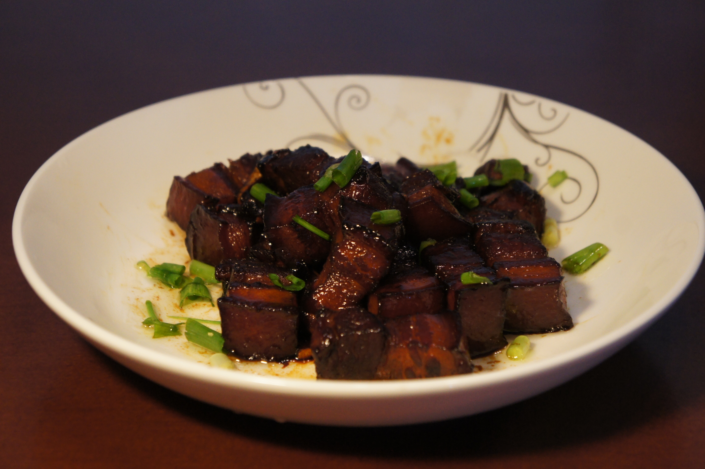
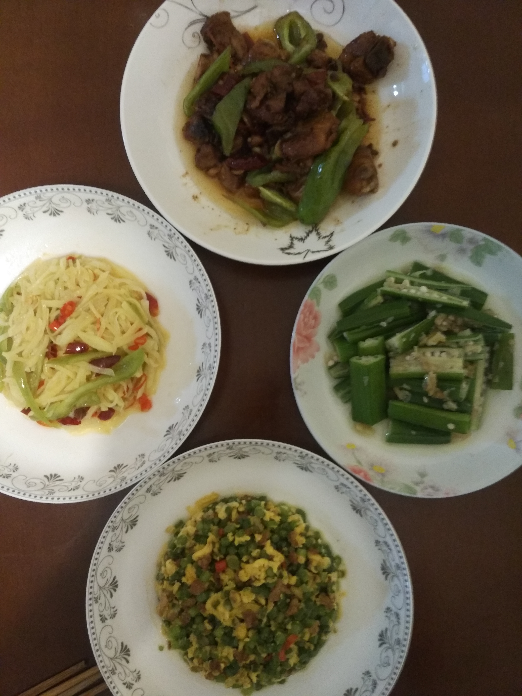
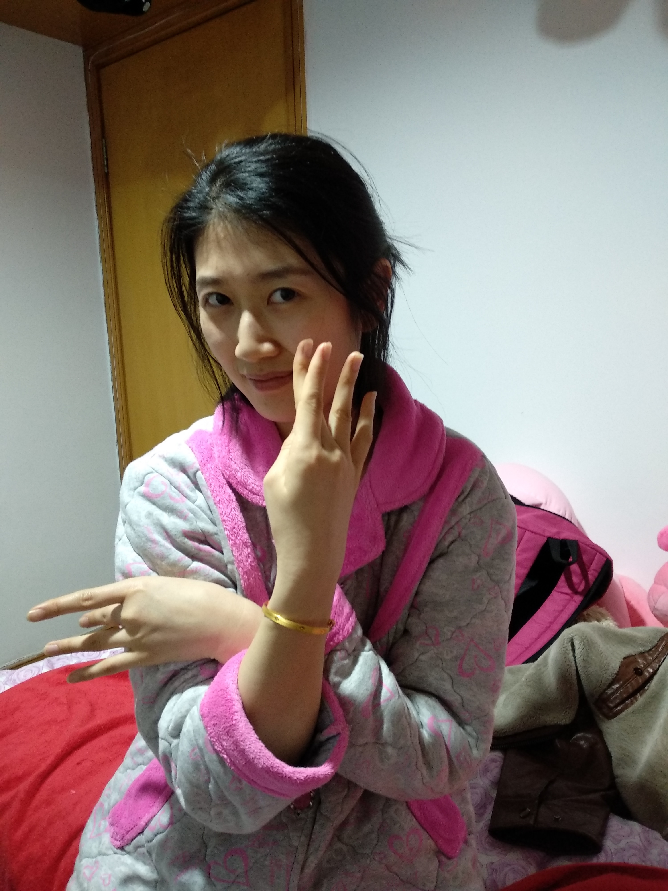
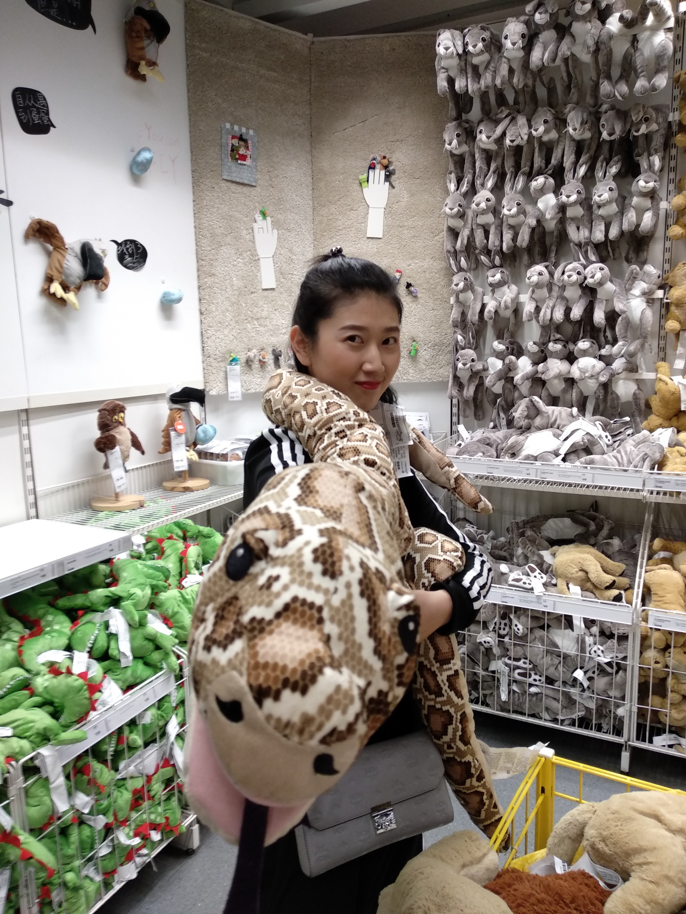
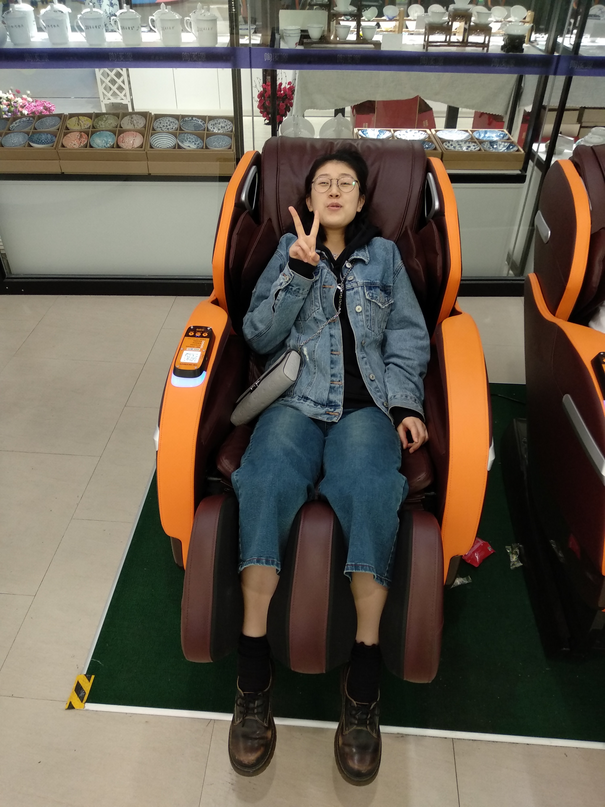
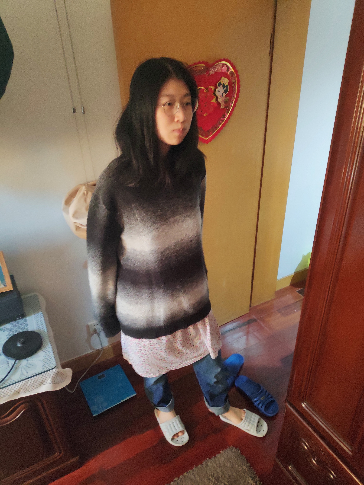
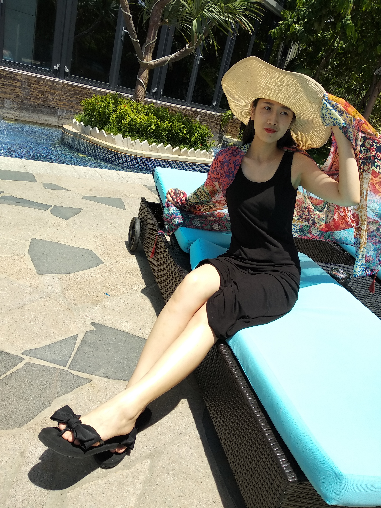
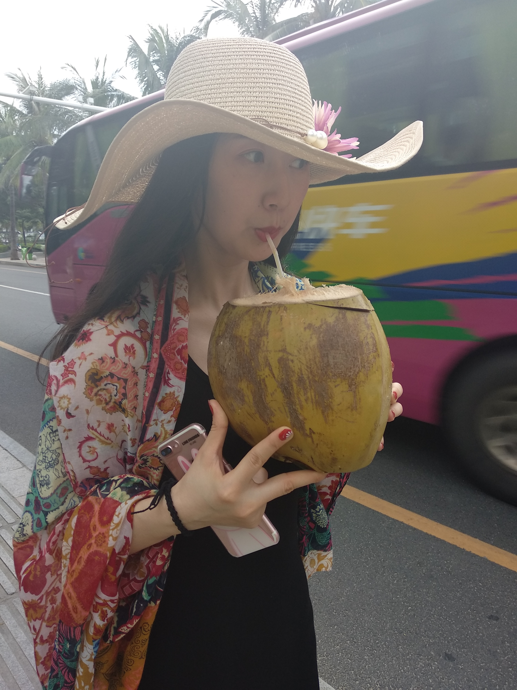
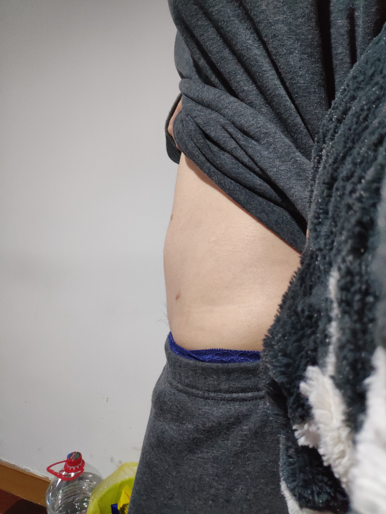
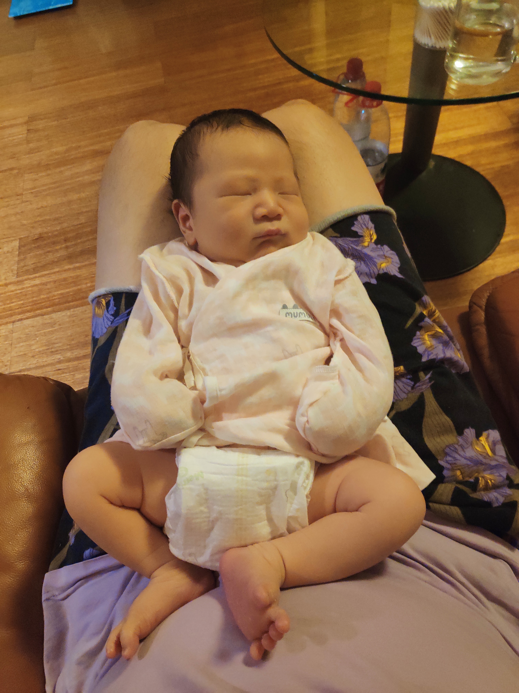

宝栗栗满二十七啦！
致我们的小美好
光阴如箭，岁月如梭，一眨眼都两周年了。栗宝和辉狗相拥走过，回过头来，翻起那些老照片，过去的种种浮现在眼前，温馨、甜蜜、俏皮......百般滋味涌上心头。我就把它记下吧，珍藏好我们走过的光阴。
第一印象
丸子头，粉白脸，有点不自然的腮红，有点羞答答的感觉。那天我很紧张怕冷场，但一与你交谈起来就轻松起来。”嗯，这姑娘真好相处，就是太能走路了，狗子饿了..."

然后我把心给你，你用爱把它包裹上，暖暖的

你说你是肉食动物，辉狗就勤学苦练红烧肉，不厌其烦的发来照片诱惑你
但真实手艺嘛...是这样的...

所以炫技完，辉狗还要默默的吃下这盘“苦烧肉”，"太难吃了！"
自栗栗露了一手以后，辉狗再不敢自谕“大厨”了，“哇！仙女还会做饭呀！！还这么好吃！！棒棒哒！！！”

每天，辉狗都在冥想“找点什么话题跟仙女聊天啊？”，“怎样才能约到仙女出游啊？”。欢乐谷没去成，西塘也不错呀，景美，栗更美

然后某一天，栗栗就把辉辉小超人娶了！娶了！！辉宝兴奋的一夜都没睡着
辉辉是世上最幸福的宝宝！
然后我们用闪电般的速度领证（嗯嗯，这张照片拍的值！我非常满意！！）

走起！去拍婚纱照（娘子~那边瞧~~）

你穿这套秀和最美啦！

一路走来，有你陪伴，世上便无难事

你总是那么乐观

时而逗比

时而呆萌
时而是调皮鬼

时而又是乖乖宝

生活因为有了栗而变得有趣而又舒坦

在栗的印象里，栗是高冷女神范的

但在辉的眼里，栗永远是辉的小可爱

在栗心里，栗是妩媚动人的

但在辉心里，这样的栗栗最萌宠

和栗栗在一起的每一天，能喂栗栗吃食都是一份荣耀

小餐布+酱饼，栗宝宝早餐的不二选择

历尽千辛万苦，宝宝终于来啦！

看着宝宝一天一天在肚里长大，别提多高兴啦

你知道吗？你在产房里的时候别提我心里有多紧张了，好心疼我的宝栗受了那么多苦。幸福的是母子平安，万事大吉！看小东西的第一眼乖乖的

大爷真稳！辉狗没用，宝妈辛苦啦！

与子携手，执子偕老
爱你！我的宝栗！
也爱你！我的栗宝！